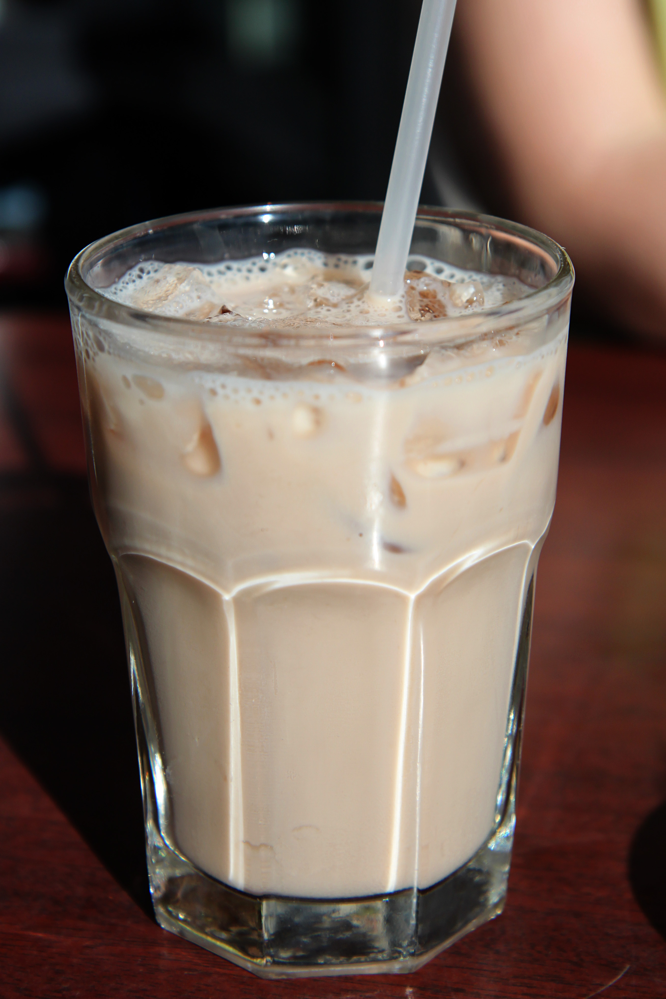

Home
Dirty Iced Chai Latte

Description
The rich blend of spices in this chai latte make a wonderful aroma to pair with Almond Breeze Almondmilk and your favorite shots of espresso.
Ingredients
- 1 cup Almond Breeze Extra Creamy Almondmilk
- 2 tablespoons Almond Breeze Vanilla Almondmilk Creamer
- 1 cup water
- 1/4 cup brown sugar
- 1/2 teaspoon ground cinnamon
- 1/2 teaspoon ground ginger
- 1/4 teaspoon cardamom
- 2 black tea bags
- Ice cubes, as needed
- 2 shots espresso, cooled
Steps
- In a small saucepan over high heat, combine water, brown sugar, cinnamon, ginger, allspice, and cardamom. Bring to a boil, then turn off heat and add tea bags. Allow to steep for about 5 minutes. Remove tea bags and allow to cool completely.
- Strain tea mixture into 2 ice filled glasses, then add espresso shots. Pour Almond Breeze Extra Creamy Almondmilk, and Almond Breeze Vanilla Almondmilk Creamer into glasses.